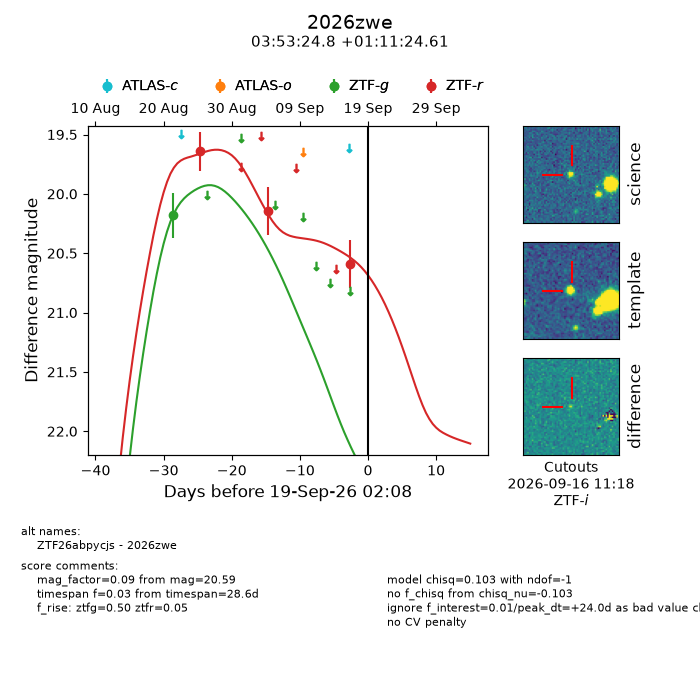
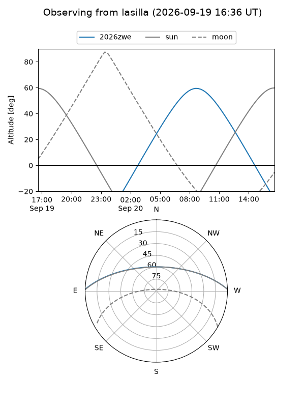
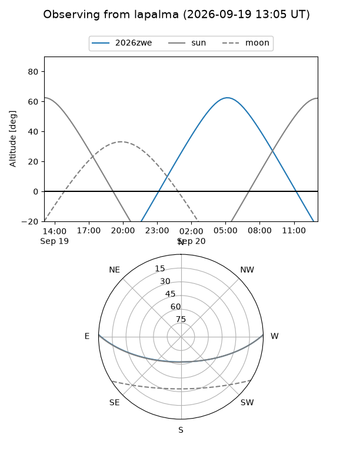
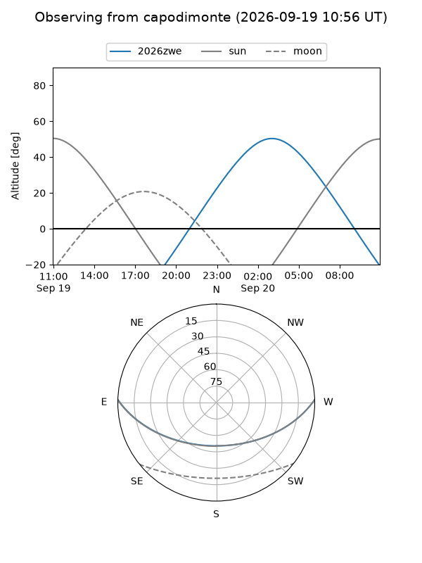
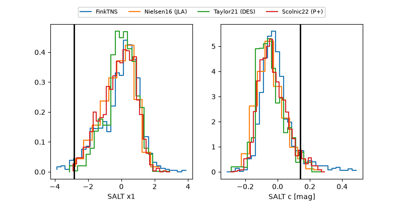

2026zwe
Target 2026zwe at 2026-09-19 14:05
Aliases and brokers:
FINK-ZTF: ztf.fink-portal.org/ZTF26abpycjs
Lasair-ZTF: lasair-ztf.lsst.ac.uk/objects/ZTF26abpycjs
ALeRCE-ZTF: alerce.online/object/ZTF26abpycjs
YSE-PZ: ziggy.ucolick.org/yse/transient_detail/2026zwe
TNS name: wis-tns.org/object/2026zwe
Direct TNS query: direct search
alt names
ZTF26abpycjs (ztf,fink_ztf)
2026zwe (tns,yse)
Coordinates:
equatorial (ra, dec) = 58.3533,+1.19017
equatorial (HMS+DMS) = 03:53:24.79,+01:11:24.61
galactic (l, b) = (187.5655,-37.89844)
Flags:
TNS type: nan
peak dt: +24.5
Photometry:
last ztfg=20.18, ztfr=20.59
1 ztfg, 3 ztfr detections
Lightcurve

Visibility



Additional plots
